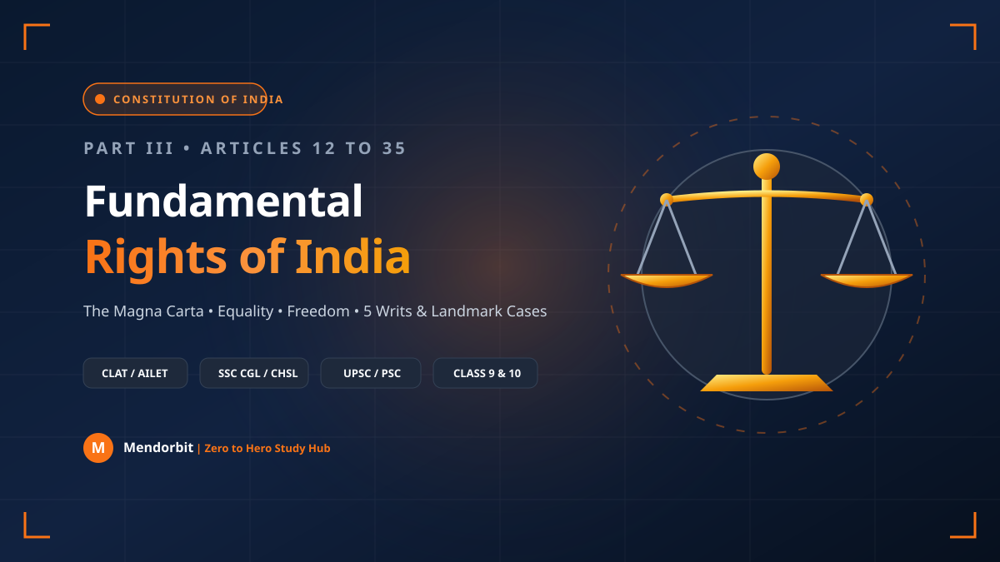

Fundamental Rights (Articles 12–35): Part III Indian Constitution, Classification & Landmark Cases
Part III of the Indian Constitution is regarded as the "Magna Carta of India." Whether you are preparing for CLAT, AILET, SSC CGL, or State Civil Services, this authoritative guide breaks down every article from 12 to 35 with practical daily-life examples, reasonable classification tests, and Dr. Ambedkar's five prerogative writs.

Download the official printable PDF notes of Part III or explore our guided live foundation batches for CLAT, AILET, SSC CGL, and Board exams:
1. Part III: The Magna Carta of India — Overview & Highlights
Articles 12 to 35 enshrined in Part III of the Constitution of India contain our Fundamental Rights. Borrowed from the Bill of Rights of the US Constitution, these rights operate as negative obligations upon the State, preventing governmental overreach and protecting the dignified existence of every individual.
| Classification | Articles | Core Purpose & Guarantee |
|---|---|---|
| Introductory Scope | Articles 12–13 | Defines "State" and establishes Judicial Review against unconstitutional laws. |
| Right to Equality | Articles 14–18 | Prohibits discrimination, guarantees equal protection, abolishes untouchability & titles. |
| Right to Freedom | Articles 19–22 | 6 Basic Freedoms, protection from conviction, Right to Life (Art 21), RTE (Art 21A), arrest rules. |
| Right against Exploitation | Articles 23–24 | Bans human trafficking, forced labour (begar), and child labour in hazardous occupations. |
| Freedom of Religion | Articles 25–28 | Individual conscience, institutional management, tax immunity, instruction in schools. |
| Cultural & Educational Rights | Articles 29–30 | Conservation of minority language, script, and right to establish & administer schools. |
| Constitutional Remedies | Article 32 | "Heart & Soul of the Constitution" — Direct access to Supreme Court via 5 Writs. |
| Exceptions & Enforcement | Articles 33–35 | Armed forces curbs, martial law protection, and Parliament's exclusive law-making powers. |
Fundamental Rights are justiciable (enforceable by courts), not absolute (subject to reasonable restrictions for public order, morality, and sovereignty), and can be defended directly before the Supreme Court under Article 32 without approaching lower courts first.
2. Introductory Articles (12–13): Scope and Enforcement
Before claiming a Fundamental Right, you must establish who is bound to respect it, and what happens when an ordinary law collides with a constitutional guarantee.
Art. 12 Definition of "The State"
Threshold CheckFundamental Rights operate primarily against arbitrary State action, not private individuals. Under Article 12, the "State" includes:
- Government and Parliament of India (Executive & Legislature).
- Government and Legislature of each State.
- All local authorities within India (Municipalities, Panchayats, District Boards).
- Other authorities under the control of Government (Statutory bodies like LIC, ONGC, SAIL, or State Universities).
Art. 13 Laws Inconsistent with Fundamental Rights (Judicial Review)
The Constitutional ShieldArticle 13 is the bedrock of Judicial Review in India. It establishes that any law (pre-constitutional or post-constitutional, ordinance, order, regulation, notification, custom, or usage) that violates or takes away any Fundamental Right shall be void ab initio to the extent of the inconsistency.
3. Right to Equality (Articles 14–18)
Articles 14 to 18 dismantle social hierarchies, institutional favoritism, and arbitrary state discretion.
Article 14: Equality Before Law & Equal Protection of Laws
Article 15: Prohibition of Discrimination
The State cannot discriminate against any citizen only on five specific grounds: Religion, Race, Caste, Sex, or Place of Birth. It guarantees equal access to public shops, restaurants, wells, and tanks.
Permissible Affirmative Action: Clauses 15(3) to 15(6) permit special beneficial provisions for women, children, socially & educationally backward classes (OBC/SC/ST), and Economically Weaker Sections (EWS).
Article 16: Equality of Opportunity in Public Employment
Guarantees equal opportunity for all citizens in government appointments. Adds two extra prohibited grounds beyond Article 15: Descent and Residence.
Article 17: Abolition of Untouchability
Completely abolishes untouchability in all forms. Practicing it is a cognizable and non-bailable criminal offence under the Protection of Civil Rights Act, 1955.
Example: Preventing someone from entering a public temple, village school, or water well on caste grounds is punishable by imprisonment.
Article 18: Abolition of Titles
Prohibits the State from conferring aristocratic titles (e.g., Rai Bahadur, Sir, Maharaja). Military and academic titles (Major, Doctor, Professor) are exempt.
Example: National awards like Bharat Ratna and Padma Vibhushan are state honours, not hereditary titles, and cannot be prefixed or suffixed to names.
4. Right to Freedom (Articles 19–22)
Articles 19 through 22 constitute the charter of individual liberty, subject to well-defined reasonable restrictions.
Art. 19 Six Fundamental Freedoms (Available to Citizens Only)
*Note: Article 19(1)(f), the right to acquire and hold property, was repealed by the 44th Constitutional Amendment Act, 1978.
Article 20: Protection in Respect of Conviction for Offences
Article 21: Life & Personal Liberty
"No person shall be deprived of his life or personal liberty except according to procedure established by law."
Through landmark verdicts (Maneka Gandhi and K.S. Puttaswamy), Article 21 has expanded to guarantee the Right to Privacy, clean air and water, emergency medical care, speedy trial, and the right to choose one's life partner.
Article 21A: Right to Education
Inserted by the historic 86th Constitutional Amendment Act (2002), it makes free and compulsory elementary education a fundamental right for all children aged 6 to 14 years.
Enforcement: Implemented via the landmark Right of Children to Free and Compulsory Education (RTE) Act, 2009.
Article 22: Protection Against Arrest & Detention
- Right to be informed of the grounds of arrest immediately.
- Right to consult and be defended by a legal practitioner of choice.
- Mandatory production before nearest Magistrate within 24 hours (excluding travel time).
- Detaining an individual without trial to prevent anticipated threats to security or public order.
- Cannot exceed 3 months unless confirmed by an independent Advisory Board chaired by High Court judges.
5. Right against Exploitation (Articles 23–24)
Articles 23 and 24 defend the most vulnerable individuals against human commodification, forced unpaid servitude, and dangerous child labor.
Article 23: Human Trafficking & Begar
Strictly prohibits trafficking in human beings, begar (unpaid forced physical labour), and bonded labour.
Article 24: Prohibition of Child Labour
Prohibits the employment of children below the age of 14 years in any factory, mine, or hazardous occupation (such as chemical plants, fireworks, or brick kilns).
6. Right to Freedom of Religion (Articles 25–28)
India practices positive secularism — giving equal respect and protection to all faiths without the state endorsing any official state religion.
Article 25: Freedom of Conscience, Practice & Propagation
Guarantees every individual the freedom of conscience and the right to freely profess, practice, and propagate their religion, subject to public order, morality, and health. Forced or fraudulent religious conversion is not protected.
Article 26: Freedom to Manage Religious Affairs
Grants religious denominations (or sections thereof) the collective right to establish and maintain charitable institutions, manage internal religious affairs, and own and administer movable and immovable property.
Article 27: Freedom from Religious Taxes
Prohibits the State from levying any tax whose proceeds are earmarked specifically for promoting or maintaining any particular religion.
Critical Legal Distinction: While levying a "tax" is unconstitutional, charging a "fee" for secular administrative services (like safety and crowd regulation at pilgrimage shrines) is legal.
Article 28: Religious Instruction in Schools
Regulates religious instruction in educational institutions:
- Institutions wholly maintained by the State: Strictly prohibited.
- State-aided / recognized institutions: Allowed only with voluntary student/guardian consent.
7. Cultural & Educational Rights (Articles 29–30) & Repeal of Article 31
Articles 29 and 30 safeguard minority communities against involuntary assimilation, preserving linguistic and cultural pluralism.
Article 29: Protection of Minority Interests
Any section of citizens residing in India with a distinct language, script, or culture has the absolute right to conserve it. Additionally, no citizen can be denied admission into any state-aided educational institution on grounds of religion, race, caste, or language.
Example: Speakers of regional languages like Maithili, Bodo, or Konkani have constitutional rights to preserve their literature and community traditions.
Article 30: Minority Educational Institutions
Grants all religious and linguistic minorities the fundamental right to establish and administer educational institutions of their choice. The State cannot discriminate in granting financial aid to such institutions.
Example: Institutions like St. Stephen's College (Delhi) or Jamia Millia Islamia are minority institutions protected under Article 30.
Originally, the Indian Constitution guaranteed the Right to Property under Article 31 and Article 19(1)(f). However, to enable zamindari abolition and socialist agrarian land reforms, Parliament repealed Article 31 from Part III through the 44th Constitutional Amendment Act, 1978.
Property rights were transformed into an ordinary legal/constitutional right under Article 300A in Part XII. Meanwhile, Articles 31A, 31B (9th Schedule immunity), and 31C remain saving clauses that protect land reform legislations and Directive Principles (Art. 39(b) & (c)) from being invalidated by judicial review.
8. Right to Constitutional Remedies (Article 32): The 5 Prerogative Writs
Dr. B.R. Ambedkar famously called Article 32 the "Heart and Soul of the Constitution" because a right without a judicial remedy is meaningless. Article 32 makes the enforcement of fundamental rights a fundamental right in itself!
| Writ Name | Literal Meaning | Issued Against | Practical Legal Application |
|---|---|---|---|
| Habeas Corpus | "To have the body" | Both Public authorities and Private individuals | Orders the physical release of an individual detained unlawfully or without magistrate orders. |
| Mandamus | "We Command" | Public officials, courts, or statutory corporations | Commands a public authority to perform a mandatory public duty it has refused or failed to execute. |
| Prohibition | "To Forbid" | Subordinate courts and quasi-judicial tribunals | Preventive writ issued to stop a lower court from exceeding its legal territorial or statutory jurisdiction. |
| Certiorari | "To be Certified" | Judicial, quasi-judicial, and administrative authorities | Curative writ issued to quash an order passed by a lower tribunal violating natural justice or jurisdiction. |
| Quo Warranto | "By What Authority?" | Any usurper of a substantive public office | Restrains someone from unlawfully occupying a public office they are not statutorily qualified to hold. |
Article 32 (Supreme Court) vs. Article 226 (High Court)
The Supreme Court under Article 32 can issue writs only for the enforcement of Fundamental Rights. In contrast, High Courts under Article 226 can issue writs for Fundamental Rights as well as ordinary legal rights, meaning the High Court's writ scope is actually wider than the Supreme Court's!
9. Concluding Articles (33–35): Exceptions & Parliamentary Power
To balance individual liberty with national security and sovereign continuity, Part III concludes with parliamentary regulatory powers.
Empowers Parliament to restrict or abrogate fundamental rights for members of the Armed Forces, Police, and Intelligence agencies to maintain strict discipline.
Enables restrictions on Fundamental Rights in areas under Martial Law (military rule) and allows Parliament to indemnify public officers for actions taken to restore public order.
Grants Parliament (and explicitly denies State Legislatures) the exclusive power to enact penal laws prescribing punishment for Part III offences (e.g. untouchability, human trafficking).
Frequently Asked Questions
Direct conceptual answers to high-frequency questions in CLAT, SSC CGL & Board examinations.
Have doubts about Constitutional Law or CLAT?
Our subject mentors will help you with strategy, case laws & concepts.